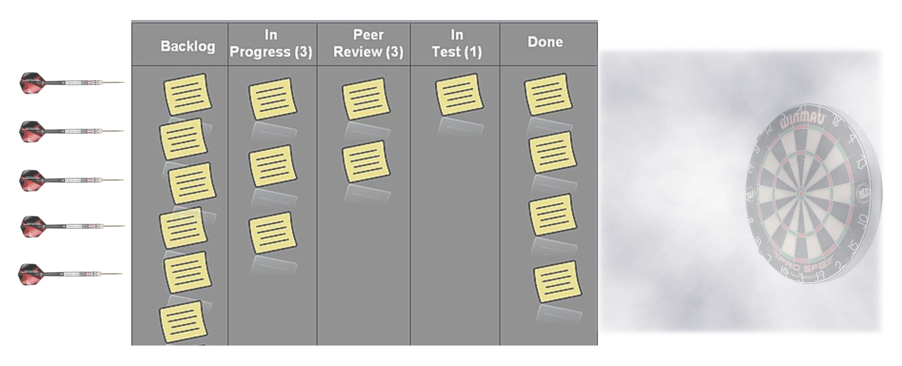

Output vs. Outcome

Is it actually done if you missed the target?When software engineers embark on a commitment to deliver code artifacts, we often measure our performance against how much stuff we get done and how fast. We’re not counting lines of code, but we may be counting the number of points on tickets or how long it takes to take it to Done. To us, Done means our code got reviewed, merged and deployed. But is that a responsible thing to do?
If we limit ourselves to be craftsmen of code, clean and functional, then our outputs are the outcomes. The goal would then be to produce pretty artifacts. But how the business benefits from them shouldn’t be someone else’s job, especially in a startup. In a real business, not all outputs yield positive outcomes. If you spent two and half weeks writing a feature that gets rolled back indefinitely, your output had provided no business value. It’s a harsh reality that developers are shielded from.
It takes work to check if our darts had any impact, and it stings when it doesn’t stick. But if we don’t know how much impact a feature makes, then we’re measuring speed, not velocity. Users and customers don’t care how much work you got done; they care if their needs are met.
It’s impossible to know if the dart will stick before throwing it, but we’re certianly not gonna get any better at throwing them if we never find out.